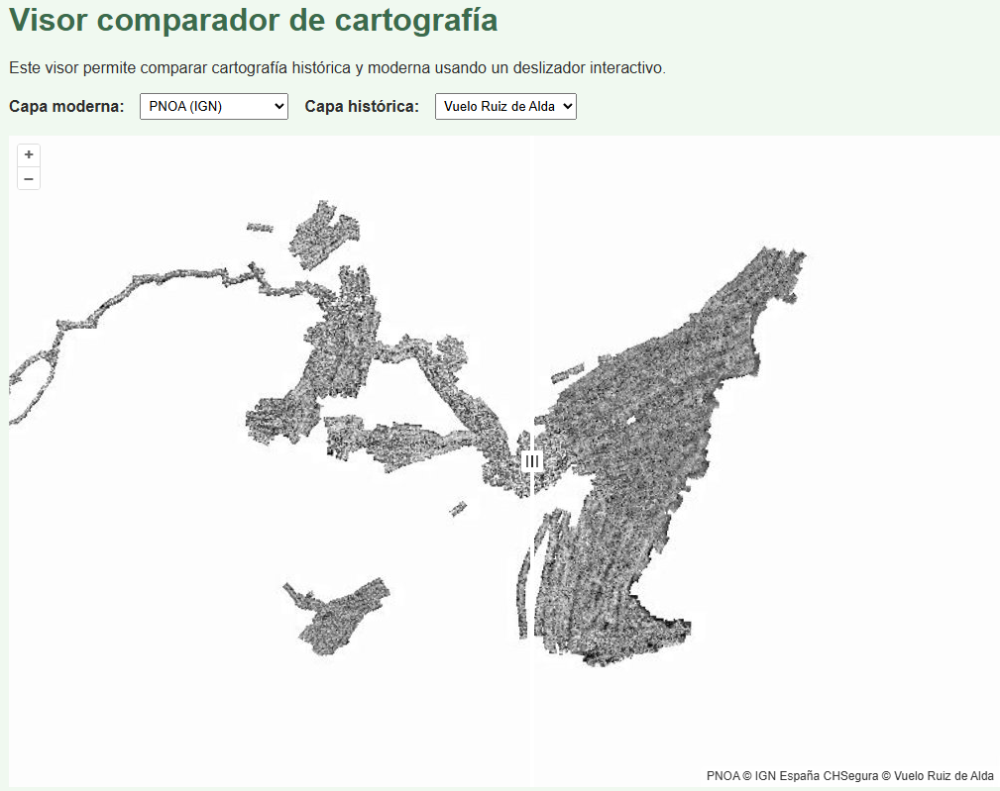

Proyectos

Visor Comparador de Cartografía
Visor web desarrollado con OpenLayers que permite explorar y comparar mapas históricos y actuales mediante un deslizador interactivo.
Tecnologías: OpenLayers, WMS/WMTS, GeoJSON, PNG, HTML, CSS, JavaScript

Mapa Etnoturístico: Ruta de las Funciones
Diseño de un mapa interactivo con Leaflet para la visualización de puntos de interés en una ruta cultural en La Unión (Murcia).
Tecnologías: Leaflet, GeoJSON, HTML, CSS

App GEE: Estado del vigor de la vegetación
Visualización del NDVI para grandes extensiones mediante Google Earth Engine y datos Sentinel-2.
Tecnologías: GEE, JavaScript
Visor Web para Espacios Naturales
Desarrollo de un visor interactivo con Leaflet y GeoServer para mostrar capas ambientales en un parque natural.
Tecnologías: QGIS, PostgreSQL, GeoServer, HTML, Leaflet
Monitorización de vegetación con GEE
Procesamiento multitemporal de imágenes Sentinel-2 para análisis de NDVI y detección de cambios.
Tecnologías: Google Earth Engine, JavaScript
Cartografía para Evaluación Ambiental
Generación de mapas temáticos y análisis espacial para estudios de impacto ambiental.
Tecnologías: ArcGIS Pro, GRASS GIS, Python